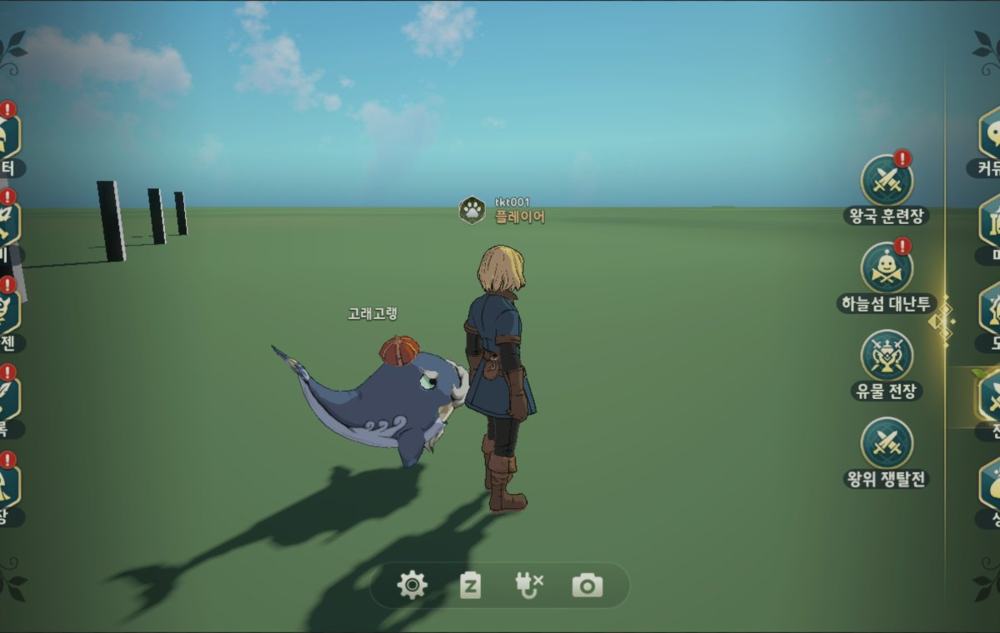
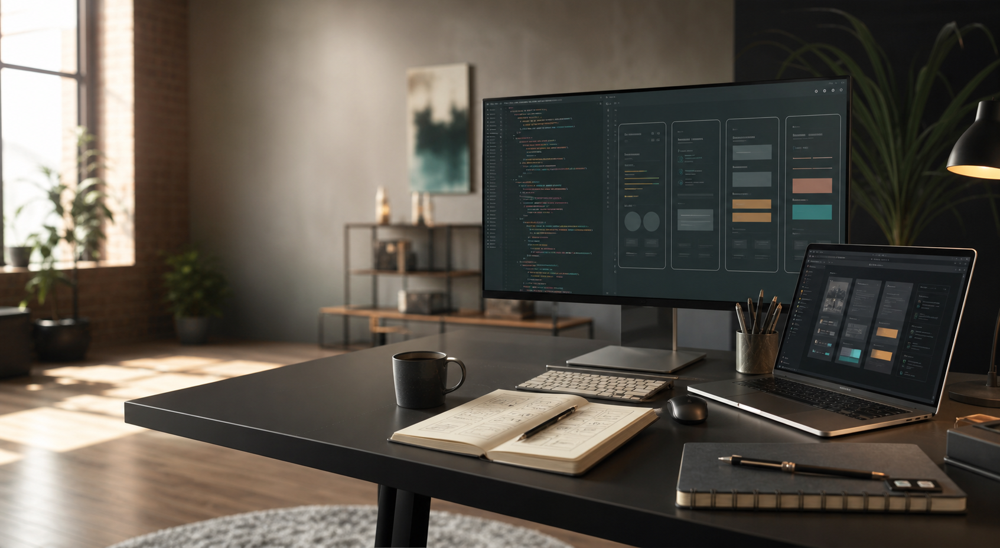
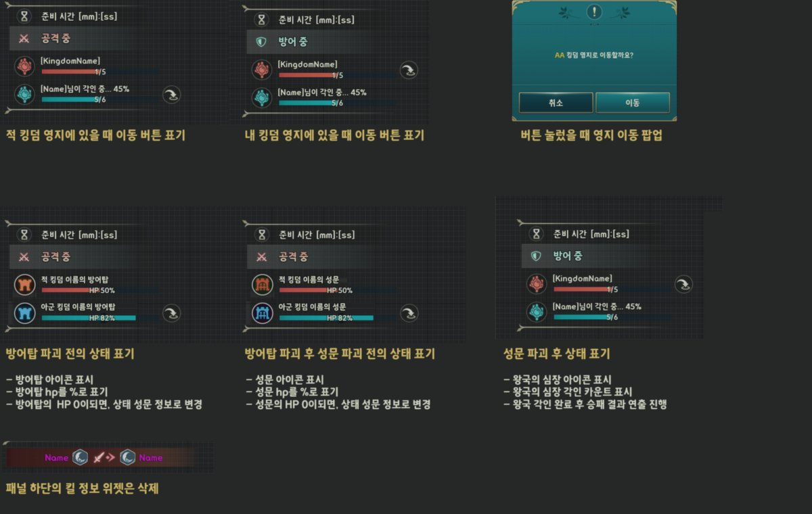
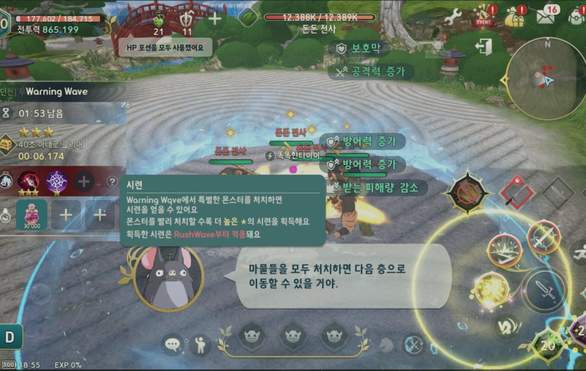
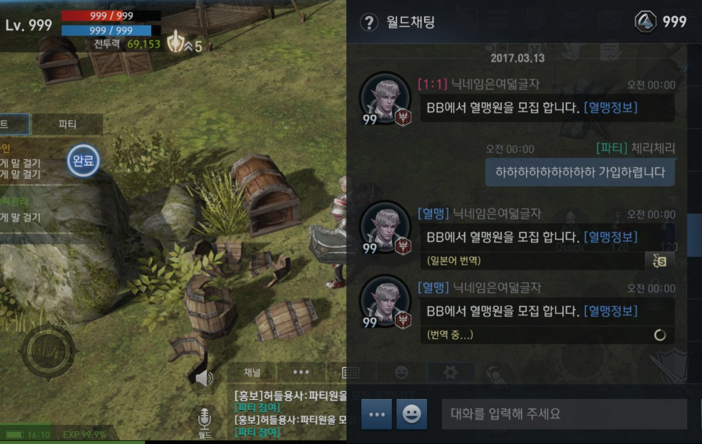
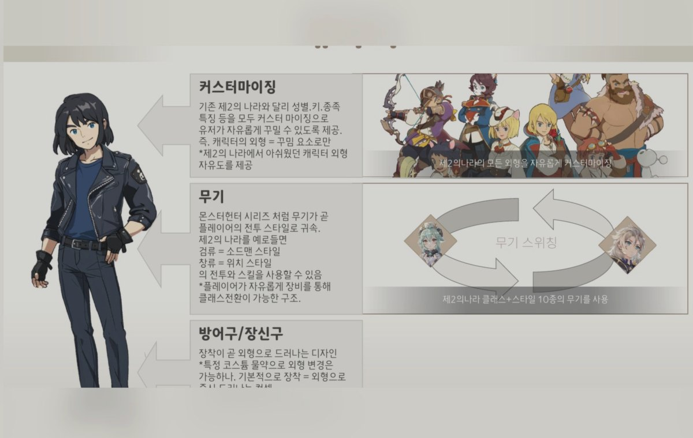

ProjectN · UX Ownership
ProjectN 시스템·콘텐츠 UX 담당 및 컨펌
ProjectN의 주요 시스템/콘텐츠 UX를 폭넓게 담당하고, 이후 개별 기획자가 기능을 맡는 구조에서는 UX 스크립트와 시안 컨펌을 수행한 작업 범위입니다.
상세 보기
Profile
UX 스크립트, 시안 리뷰, 스트링/노티 테이블, QA 확인 포인트를 함께 보며 유저가 어느 시점에 무엇을 보고 판단해야 하는지 정리하는 방식으로 작업해왔습니다.
Selected Work

ProjectN의 주요 시스템/콘텐츠 UX를 폭넓게 담당하고, 이후 개별 기획자가 기능을 맡는 구조에서는 UX 스크립트와 시안 컨펌을 수행한 작업 범위입니다.
상세 보기
대형 경쟁 콘텐츠의 진입, 스케줄, 입장 가능 상태, 결과, 보상, 알림 정책을 UX 스크립트와 스트링 산출물로 정리한 사례입니다.
상세 보기이벤트성 신규 게임 콘텐츠가 들어갈 때 인게임/아웃게임 UX를 함께 정리한 사례입니다.
상세 보기
이벤트성 신규 게임 콘텐츠로서 월드맵/노티/채널/브로드캐스팅 등 인게임·아웃게임 접점을 정리한 사례입니다.
상세 보기
킹덤 가입, 출석, 기부, 창설 연출 등 소셜 시스템의 진입과 반복 사용 흐름을 정리한 사례입니다.
상세 보기
침공전의 공격/방어 상태, 성문/방어탑 정보, 이동 팝업, 전서버 매칭 UX 등 전투 콘텐츠의 정보 패널을 정리한 사례입니다.
상세 보기
도전형/파티형 PvE 콘텐츠의 개요, 스크립트, 콘텐츠락, 노티, 스트링을 정리한 최근 콘텐츠 사례입니다.
상세 보기
여러 국가 서비스를 위한 번역, 다국어, 현지화 에셋, 국가별 언어 설정, UI 폴리싱 대응을 주로 수행한 사례입니다.
상세 보기
웨스턴 서비스에서 이벤트 팝업, 몬스터 소환석, 상점/패키지 등 지역 서비스에 맞춘 UX 개선을 정리한 사례입니다.
상세 보기
정식 프로젝트 산출물이라기보다, 회사 안에서 꾸준히 신규 게임 방향과 장르 관점을 제안하고 어필해온 활동입니다.
상세 보기Experience
주요 시스템/콘텐츠 UX를 담당하고, 이후 개별 기획자 작업물의 UX 기준을 컨펌.
월드 이벤트, 게임플레이 이벤트, 보물찾기 등 이벤트성 신규 게임 콘텐츠 UX 정리.
웨스턴, 다국어, 현지화, 국가별 언어/상점/번역 이슈에 맞춘 UX 개선 대응.
정식 프로젝트 산출물이 아닌 사내 어필/제안 활동으로 장르와 플랫폼 관점을 정리.